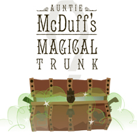
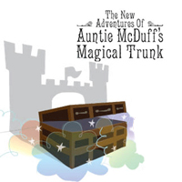
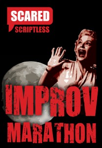

Radio Ha Ha
A rapid-fire, off-the-cuff 1930s radio show shaped entirely around audience suggestions to create news, interviews and thrilling serials that never seen – or heard – before. Packed with thrills and spills and complete with live sound effects and music, this loving homage to the golden age of the wireless proved so popular that it was aired on Radio NZ National.

Aunty McDuff's Magical Trunk
Ever wondered what your mad old aunty keeps in her trunk? For the three kids in AUNTY MCDUFF’S MAGICAL TRUNK, it’s everything they need to escape the boredom of a rainy day and get carried away on a magical adventure that has them cruising the world in a boat or a plane, defending castles, or riding in wagon trains with cowboys and indians! No two shows are the same as the audience help decide what happens next in a unique adventure in storytelling using the magic of imagination.
Chatterbox
The stars of today are lampooned by the stars of tomorrow as The Court Jesters get up close and personal with local celebrities. After a live interview with Artistic Director Ross Gumbley, four of our top improvisers replay stories from the lives and careers of these famous Cantabrians. Guests include Garry Moore, Margaret Mahy, Steve Gurney, David McPhail and Ruth Dyson.
Scriptless Uncut
With the glitz and glamour of a Hollywood awards ceremony, The Jesters romp across genres, styles and the bounds of political correctness to create anything from art-house, melodrama and independent film to schlock horror, science fiction and big-budget blockbusters, armed with only their wits (and audience suggestions) to guide them. SCRIPTLESS UNCUT is a love letter to an industry that shoots too many pictures and not enough actors.

The New Adventures of Auntie McDuff’s Magical Trunk
Auntie McDuff’s Magical Trunk is back after a successful Kidsfest season in 2008, ready to take audiences on a completely new magical adventure! Using only the old objects in mad Auntie McDuff’s Trunk, three actors set off on an exciting and wonderfully old-fashioned ride – building everything they need along the way!
Pulp William
Three performers break out of their cages after being locked up with Shakespeare’s Complete Works and a set of Tarantino DVDs to create a unique mix of star-crossed lovers, bad-ass gangsters, Mexican stand-offs, Italian surnames, cunning plots, poison, handguns, sonnets and fast-paced dialogue laden with pop culture references and extended metaphors – all in a plot with more twists than a night at Jack Rabbit Slims. It’s an improvised comedy mash-up that blows audiences away.
Forsooth ’twas devilish fun.
Presto Magazine
Packs enough comedy to appeal to anyone
CANTA
A Very Merry Scriptless
Masters of improvised mayhem The Court Jesters gave their fast-paced, furiously funny brand of comedy a festive feel in A Very Merry Scriptless, with content suitable for the whole family. This holiday-themed improvised show is a theatrical Christmas cracker for all ages.
In 2006 the show followed a fun format of short scenes in the traditional SCRIPTLESS style. In 2007 it was a “Celebrity Christmas Special” hosted by Scott Koorey. In 2008 the Jesters took on Scrooge with an improvised reinterpretation of Dickens’ CHRISTMAS CAROL. In 2009 they took on the Nativity itself.
Scared Scriptless: Improv Deathmatch
Appeared at the Dunedin Fringe Festival 2010. Featuring Dan Pengelly, Emma Brittenden, Brendon Bennetts and Hamish Parkinson.
Four improvisational gladiators will battle it out to create the most amusing, intriguing, endearing and unexpected theatre imaginable. Will they win honour and glory? Or will they be punished with a fate worse than death? You decide!
A rollercoaster of a journey from the sedateness of Jane Austen to the terrifying future visions of an audience member’s life as a rural doctor and part time pig slaughterer.
Theatreview
The Early Early Late Show
Very, very funny at an early, early time with plenty of audience participation and laughs for all ages in a show that you can take the whole family to see and still have them home in time for bed.
If you’re scared of Scared Scriptless, The Early Early Late Show is the perfect introduction to the Jesters’ brand of improvised mayhem.

The 30-Hour Improv Marathon
The Jesters celebrated 20 years of Scared Scriptless with 30 hours of non-stop improvised madness.
We tip our hats to Daniel Pengelly, Javier Jarquin and over 20 amazing audience members who lasted the whole 30 hours!